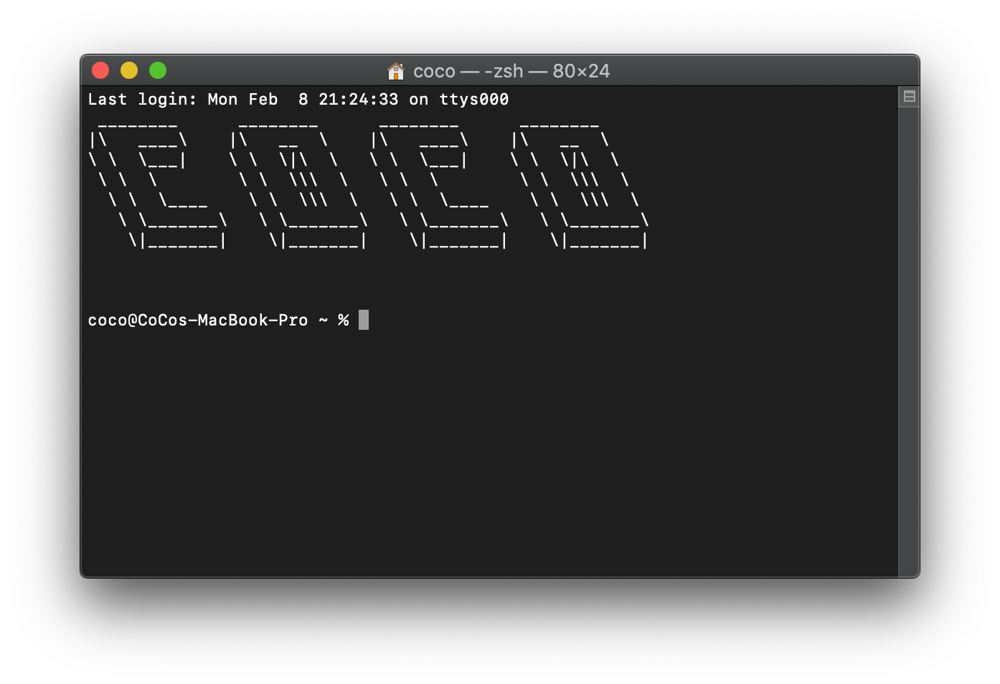
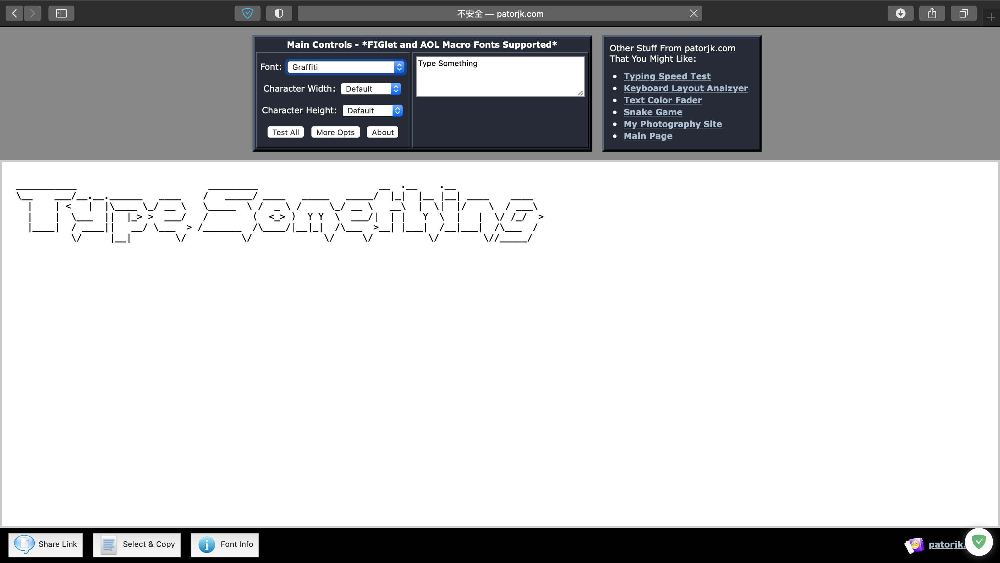

Linux-Mac-OS修改Terminal启动问候语
title: Linux/Mac OS修改Terminal启动问候语
date: 2021-02-08 21:25:41
categories: 计算机
tags:
-
Mac
-
Linux
首先还是先放上我的终端，如果应用Oh My Zsh的话效果会更好，不过是岁数大了之后就不喜欢花里胡哨了。

1.打开终端，输入下面👇的命令
sudo vim /etc/motd
（会提示输入密码，密码不会显示）
2.打开Patorjk生成你想要的字符画

点击最下面的select©就以复制
3.返回刚刚打开的Terminal --> 按键i -->按键⌘+v（如果还想要其他内容的话加到该处即可） --> 按键Esc -->输入:wq
4.重启一下Terminal就可以看到效果